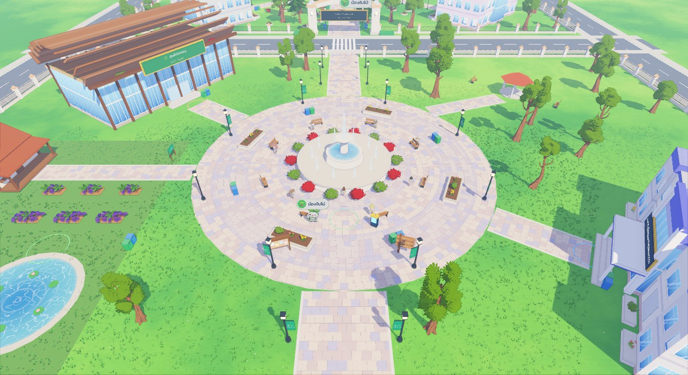
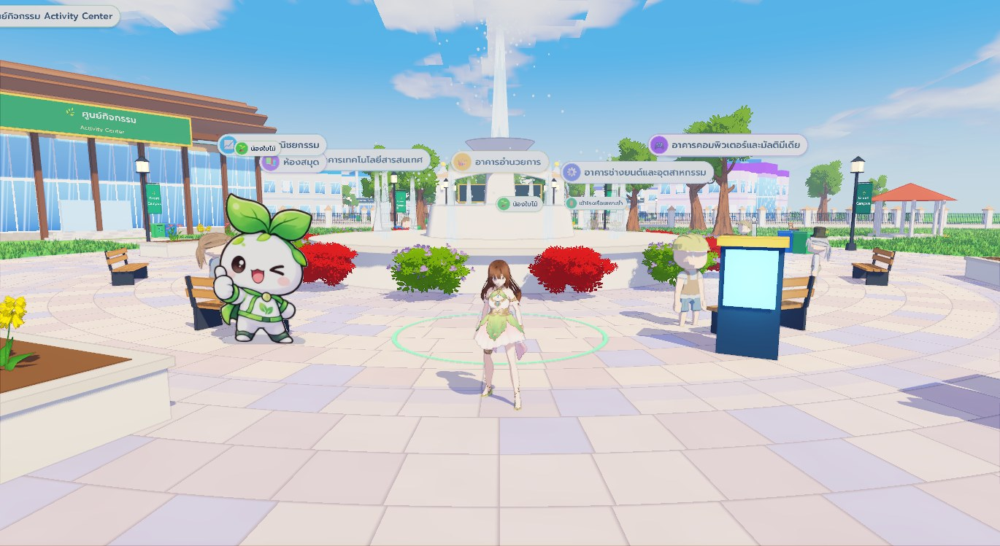
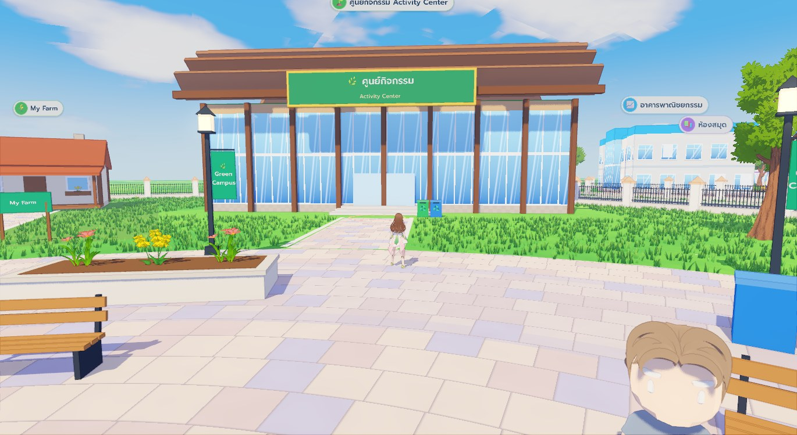
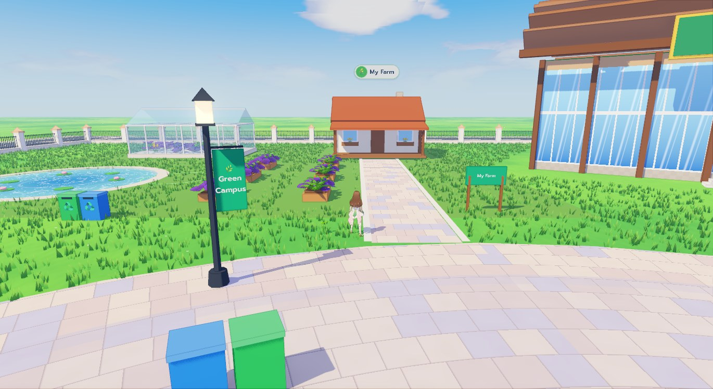
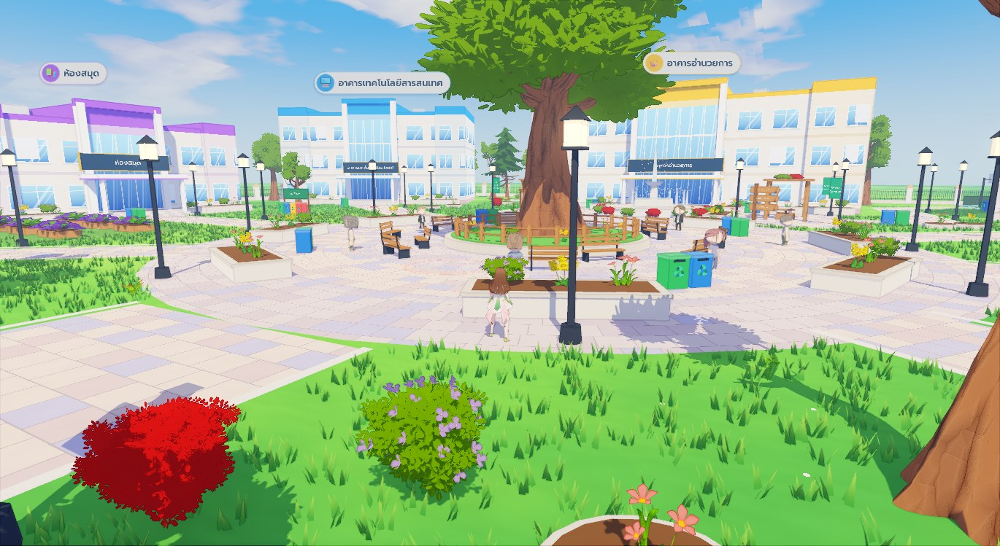
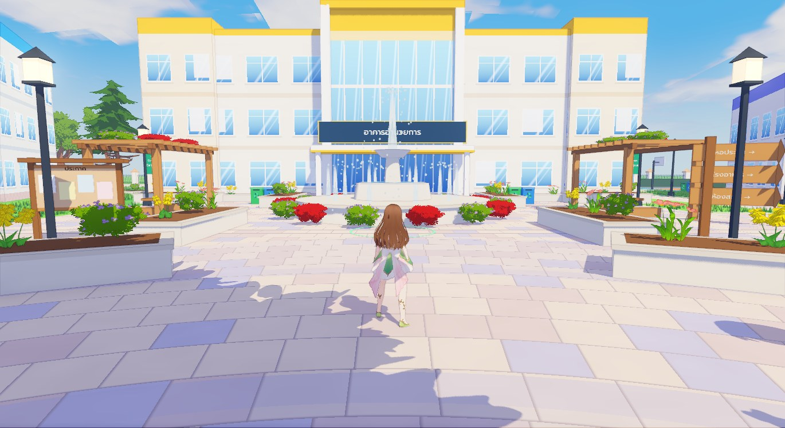
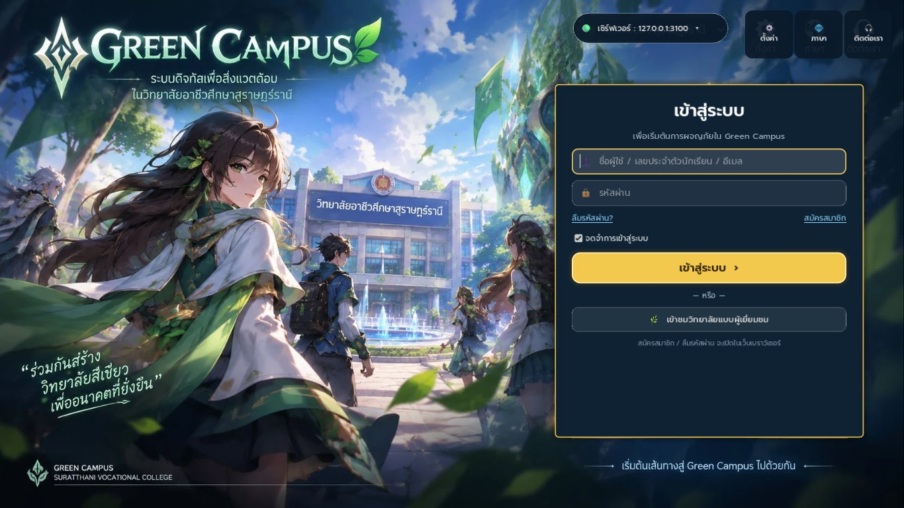

วิทยาลัยทั้งหลังแบบ 3 มิติ
อาคาร 7 หลังรอบลานต้นไม้ใหญ่ ตามผังจริงของวิทยาลัย มีป้ายชื่อและแผนที่
ระบบดิจิทัลเพื่อสิ่งแวดล้อม · วิทยาลัยอาชีวศึกษาสุราษฎร์ธานี
เดินสำรวจวิทยาลัยแบบ 3 มิติสไตล์อนิเมะ เช็กอินที่ลานน้ำพุ ทำภารกิจรักษ์โลก แยกขยะ ดูแล My Farm และพบน้องใบไม้
ฟรี · Windows 10/11 (64-bit) · iPhone iOS 15 ขึ้นไป · วิธีติดตั้ง Windows · วิธีติดตั้ง iPhone







อาคาร 7 หลังรอบลานต้นไม้ใหญ่ ตามผังจริงของวิทยาลัย มีป้ายชื่อและแผนที่
เริ่มเกมที่ลานน้ำพุ เช็กอินรับภารกิจประจำวัน แล้วเดินข้ามทางม้าลายเข้าวิทยาลัย
แยกขยะ ปิดไฟห้องว่าง ดูแลแปลงผักใน My Farm และเรียนรู้พลังงานแสงอาทิตย์
สมัครครั้งเดียว ใช้ได้ทั้งเกม Windows และเว็บ เก็บในฐานข้อมูล Supabase
แผนที่ย่อ แผนที่เต็มจอ กดหมุดเพื่อไปยังสถานที่ได้ทันที
ต่ำ / กลาง / สูง เริ่มที่ "ต่ำ" ให้ลื่นบนโน้ตบุ๊กทั่วไป ปรับระหว่างเล่นได้
GreenCampus-Setup.exe| ระบบปฏิบัติการ | Windows 10 หรือ 11 แบบ 64-bit |
|---|---|
| การ์ดจอ | รองรับ Vulkan หรือ OpenGL 3.3 (การ์ดจอในตัว Intel / AMD รุ่นปี 2016 ขึ้นไปเล่นระดับ "ต่ำ" ได้) |
| หน่วยความจำ | RAM 4 GB ขึ้นไป (แนะนำ 8 GB) |
| พื้นที่ | ประมาณ 200 MB |
| อินเทอร์เน็ต | ใช้ตอนเข้าสู่ระบบ ถ้าไม่มีเน็ตยังเล่นแบบผู้เยี่ยมชม/ออฟไลน์ได้ |
iPhone ลงแอปนอก App Store ได้ผ่านแอป SideStore ซึ่งเซ็นแอปด้วย Apple ID ของคุณเอง ใช้ Apple ID ฟรีได้ ต้องใช้คอมพิวเตอร์ Windows แค่ครั้งแรกครั้งเดียว (ยืมคอมเพื่อนได้) หลังจากนั้นทำบนมือถือทั้งหมด
SideStore.ipa จาก sidestore.ioSideStore.ipa → ใส่ Apple IDGreenCampus.ipa จะอยู่ในแอป ไฟล์ (Files) → ดาวน์โหลดGreenCampus.ipa| รุ่นที่รองรับ | iPhone ที่ใช้ iOS 15 ขึ้นไป (แนะนำ iPhone 11 ขึ้นไป) |
|---|---|
| การควบคุม | จอยซ้ายล่างเดิน · ลากนิ้วหมุนกล้อง · แตะป้ายเพื่อโต้ตอบ · กราฟิกเริ่มที่ "ต่ำ" |
| ข้อจำกัด Apple ID ฟรี | ต่ออายุทุก 7 วัน · เปิดใช้แอปที่ลงเองได้พร้อมกัน 3 แอป (นับ SideStore ด้วย) |
| ความปลอดภัย | ดาวน์โหลดจากเว็บทางการเท่านั้น และแนะนำให้ใช้ Apple ID สำรองที่ไม่ใช่บัญชีหลัก |
กำลังโหลดรายการเวอร์ชัน…
ฟรีทั้งหมด เป็นโครงงานของนักเรียนวิทยาลัยอาชีวศึกษาสุราษฎร์ธานี
Windows เตือนทุกโปรแกรมที่ไม่ได้ซื้อใบรับรองการเซ็นชื่อดิจิทัล (มีค่าใช้จ่ายรายปี) ให้ดาวน์โหลดจากหน้านี้เท่านั้น แล้วกด More info → Run anyway
ไม่บังคับ กด "เข้าชมวิทยาลัยแบบผู้เยี่ยมชม" ได้เลย แต่ถ้าสมัคร จะได้ชื่อในเกมและสถานที่เฉพาะนักเรียน
กดปุ่ม "เซิร์ฟเวอร์" มุมขวาบนของหน้าเข้าสู่ระบบในเกม แล้วใส่ที่อยู่ที่ครูหรือผู้ดูแลแจ้ง ถ้าต่อไม่ได้ ยังเล่นแบบออฟไลน์ได้
กด O ในเกมเพื่อเปิดตั้งค่ากราฟิก แล้วเลือก "ต่ำ" (เป็นค่าเริ่มต้นอยู่แล้ว) ปิดโปรแกรมอื่นที่ไม่ใช้ และเสียบสายชาร์จโน้ตบุ๊ก
ดาวน์โหลดไฟล์ติดตั้งจากหน้านี้อีกครั้งแล้วติดตั้งทับได้เลย การตั้งค่าและบัญชีที่จำไว้ยังอยู่
การขึ้น App Store หรือ TestFlight ต้องสมัคร Apple Developer (ปีละ 99 USD) โครงงานนี้จึงแจกเป็นไฟล์ .ipa ให้ลงด้วย Apple ID ของผู้เล่นเองผ่าน SideStore ซึ่งฟรี
แอปหมดอายุครบ 7 วัน ให้เปิดแอป VPN แล้วกด Refresh All ใน SideStore ถ้ายังไม่ได้ ลบเกมแล้วลงไฟล์ .ipa ใหม่
Settings → Apps → Installed apps → Green Campus → Uninstall